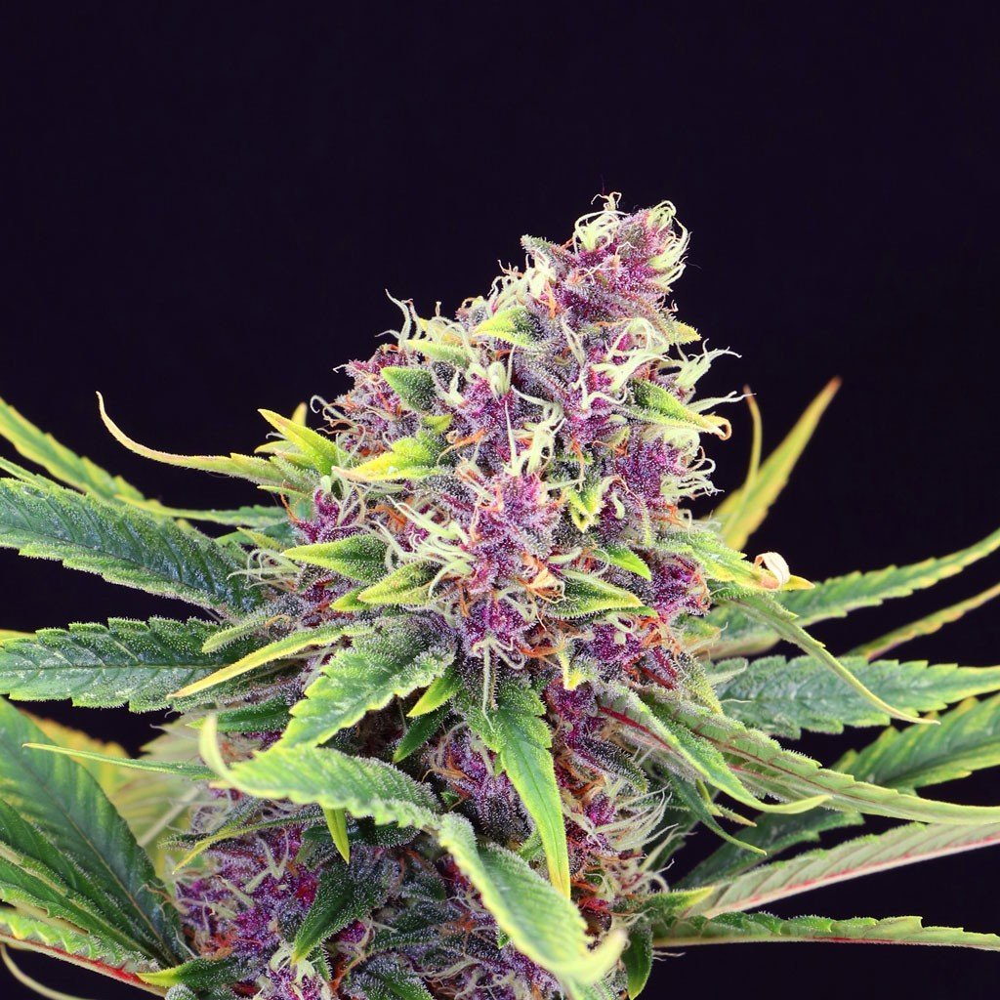
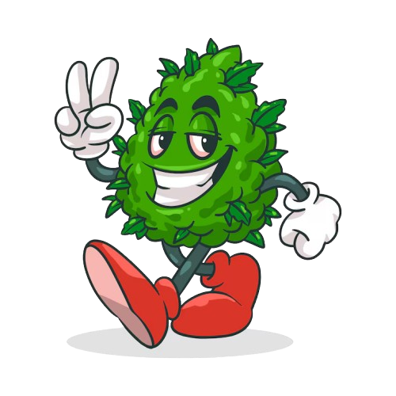

Casa Púrpura reúne a quienes entienden el cannabis como se entiende un buen whisky o un habano: con tiempo, curiosidad y respeto por el ritual. Un espacio para explorar el uso recreativo con la cabeza fría.

Purple Kush — la flor que le dio nombre a la casa“No abrimos la puerta a cualquiera que quiera fumar rápido. La abrimos a quien quiere entender qué está fumando, por qué, y hasta dónde.”— Filosofía de admisión, Casa Púrpura
El uso recreativo de la marihuana trae beneficios reales y riesgos reales. En Casa Púrpura no vendemos una sola cara de la moneda: la disfrutamos con los ojos abiertos.
Reduce la tensión física y mental, y suele acompañar bien el cierre del día o los espacios de ocio compartido.
Fumar en compañía tiene su propia coreografía: se comparte, se conversa, se baja el ritmo. Es, para muchos, una excusa para estar presentes.
Aromas, sabores y texturas distintos según la genética de cada planta —igual que ocurre con el vino o el café de especialidad.
Muchos consumidores reportan una mirada distinta sobre la música, el arte o las ideas propias durante el efecto.
Afecta la coordinación, el tiempo de reacción y la memoria a corto plazo. No es momento para conducir ni para decisiones importantes.
Inhalar humo —de cualquier planta— irrita las vías respiratorias. Vaporizar o consumir de otras formas reduce, pero no elimina, ese riesgo.
El uso frecuente puede generar tolerancia y una dependencia psicológica que vale la pena vigilar, especialmente en quienes ya tienen ansiedad de base.
La legalidad y las cantidades permitidas cambian radicalmente según el país o el estado. Conocer la ley local es parte del ritual, no un detalle menor.
Ninguna variedad explica mejor el nombre de esta casa. Índica pura, de efecto profundo y color imposible, la Purple Kush no solo perfuma una habitación: perfuma toda una cultura.
La leyenda de la Purple Kush se cuenta más en historias de cultivadores que en registros oficiales. Así se suele narrar su camino.
El linaje de la Purple Kush se remonta a variedades landrace de las montañas del Hindu Kush, entre Afganistán y Pakistán: plantas índica robustas, adaptadas al frío y con pigmentos violetas naturales.
Cultivadores de California cruzan esas genéticas para estabilizar una índica de color intenso, aroma dulce y efecto sedante marcado: nace lo que hoy conocemos como Purple Kush.
La variedad se asocia fuertemente con Oakland, donde bancos de semillas y cultivadores locales la popularizan como una de las índicas de referencia del cannabis californiano.
Con la expansión del cannabis medicinal en California, la Purple Kush se vuelve habitual en dispensarios, apreciada por su efecto relajante de cuerpo completo.
Aparece en canciones, en arte urbano y en la iconografía de la cultura cannábica: su color la volvió una de las variedades más reconocibles del mundo, más allá de su efecto.
Cogollos densos y compactos, con hojas que van del verde oscuro al violeta profundo, cubiertos de tricomas plateados que le dan un brillo casi escarchado.
Dulce y terroso, con notas de uva y una base amaderada de incienso que recuerda a su herencia del Hindu Kush.
Índica de cuerpo completo: relajación profunda, calma mental y una somnolencia que la hace predilecta para el cierre del día, no para empezarlo.
En el vocabulario cannábico, "regular" no es sinónimo de básica ni de segunda categoría: es la flor de referencia, sin genética de autor ni linaje con historia propia como la Purple Kush. Es cannabis estándar, cultivada de forma constante y consistente, pensada para el consumo cotidiano más que para la ocasión especial.
Mientras la Purple Kush es la pieza de colección —la que se presenta, se cuenta y se saborea despacio—, la Regular es la que siempre está disponible: un perfil equilibrado, previsible y fácil de disfrutar, ideal para quienes recién se acercan al club o simplemente quieren una experiencia sin sorpresas.
No busca competir con la Purple Kush en espectáculo: busca ser confiable, sesión tras sesión.
Cogollos de tamaño y densidad medios, verde clásico, sin las tonalidades violeta que distinguen a las genéticas especiales de la casa.
Herbal y terroso, más sutil y directo, sin las notas dulces o afrutadas de una variedad curada.
Balanceado y moderado: ni tan sedante como una índica de autor ni tan intenso como una sativa marcada. Pensada para acompañar, no para protagonizar.
No todo en el cannabis es ceremonia y buen gusto: también es meme, es calle, es humor. Casa Púrpura también le hace espacio a esa parte, con la misma curaduría.
La cara sonriente y ojos enrojecidos es uno de los símbolos más repetidos del fan art cannábico: el humor como puerta de entrada a la cultura.

Un guiño a la estética urbana del streetwear cannábico: el cogollo convertido en personaje, relajado, con el gesto de paz como saludo.
El cruce entre cultura pop, cómic y cannabis: una iconografía que circula en redes y en el arte digital independiente de la comunidad.
Casa Púrpura no es para apurados. Es para quienes quieren conocer, comparar y disfrutar con criterio. La membresía es limitada y por invitación.
Solicitar membresía